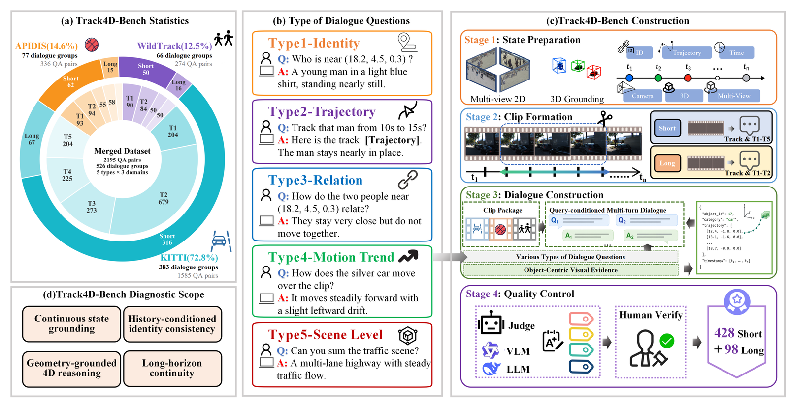
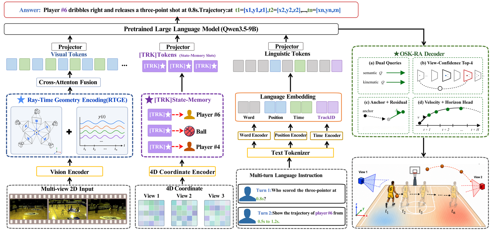
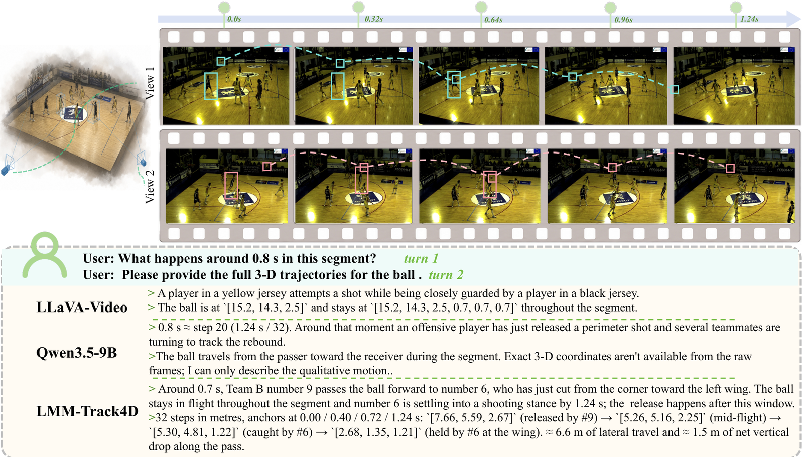
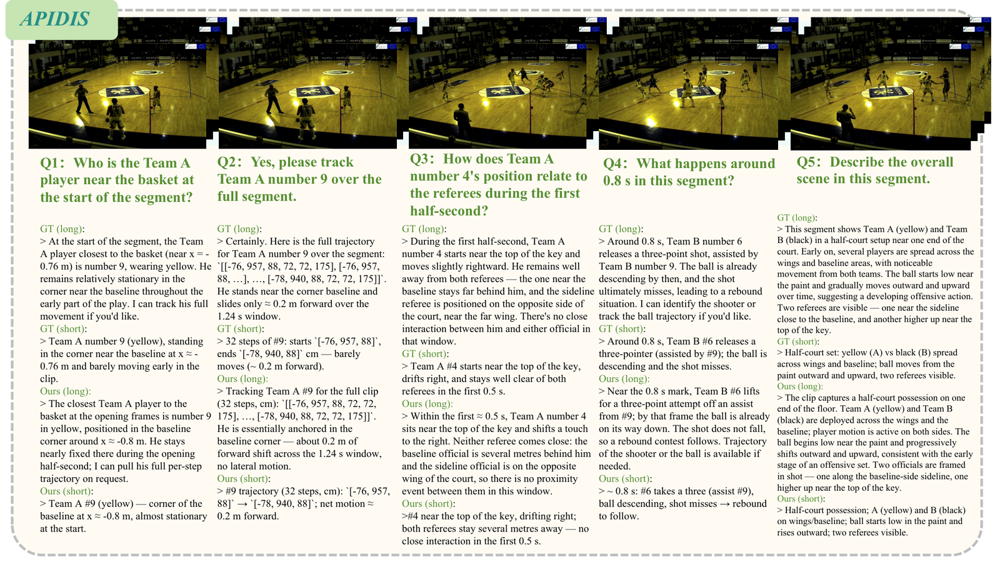
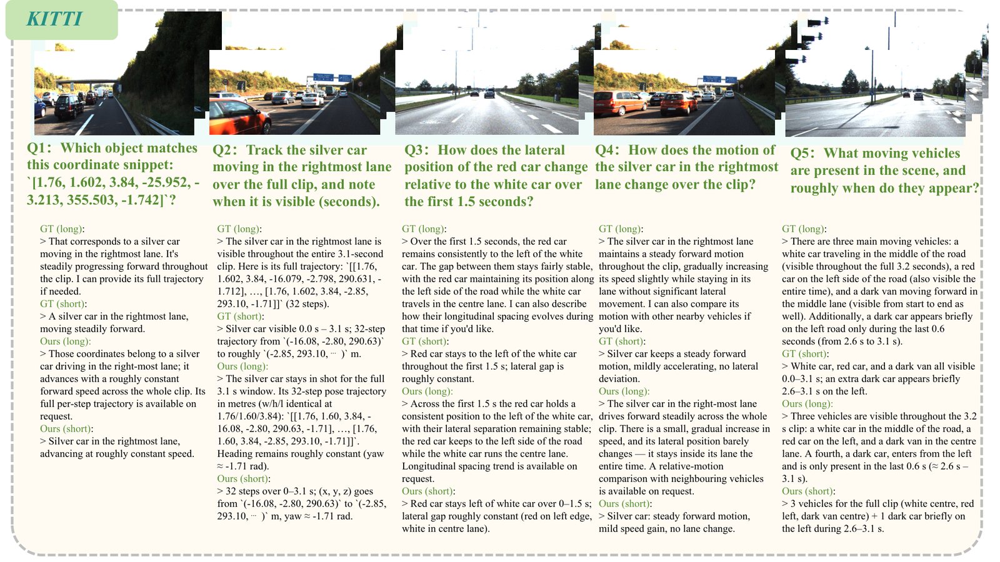
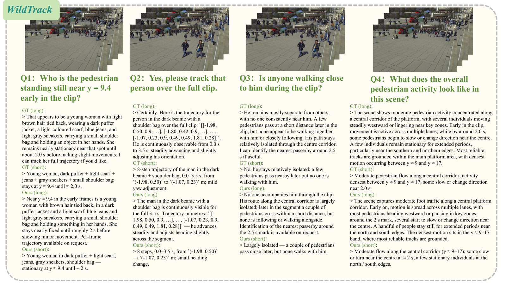

Abstract
Recent large multimodal models (LMMs) have become increasingly capable on image and video understanding, yet still struggle to sustain 4D continuous spatiotemporal dynamic reasoning. To study this capability gap, we formulate trajectory-grounded multi-turn spatiotemporal dialogue, a new task in which a model must answer spatiotemporal queries while returning structured 3D target trajectories over an entire short clip or a specified segment of a longer clip, and introduce Track4D-Bench, a benchmark with 526 clip-level dialogue samples spanning 23.5k frames and 7.5k object annotations, for training and evaluation.
Building on this task, we propose LMM-Track4D, which combines RTGE (Ray–Time Geometry Encoding), a dedicated streaming state token TRK for long-horizon dynamic propagation, and an Object-Slot Kinematic, Residual-Anchor (OSK-RA) decoder for stable 4-step 3D state estimation under occlusion and viewpoint variation. Experiments on Track4D-Bench show consistent improvements over strong baselines, suggesting that explicit dynamic state modeling is a useful design principle for eliciting 4D dynamic reasoning in LMMs. Our code and dataset will be publicly available at https://github.com/mikubaka88/LMM-Track4D.
Key Highlights
New Task
Trajectory-grounded multi-turn spatiotemporal dialogue couples language reasoning with explicit 3D state prediction across views and dialogue turns.
Track4D-Bench
526 auditable clip-level dialogue samples from APIDIS, KITTI, and WildTrack, with verified 3D trajectories and multi-turn supervision.
LMM-Track4D
RTGE geometry encoding, persistent TRK state propagation, and OSK-RA decoding for stable 4D dynamic state maintenance.
Strong Gains
Large improvements in dense non-keyframe inference, severe occlusion, and long-range identity preservation over proprietary and open-source LMMs.
Track4D-Bench
A query-driven benchmark for continuous 4D dynamic reasoning with auditable 3D supervision
Track4D-Bench is built through a structured pipeline—state preparation, clip formation, dialogue construction, and quality control—rather than direct raw-video prompting. It assembles 526 clip-level dialogue samples covering 23.5k frames and 7.5k object annotations, alongside verified 3D trajectories, object-centric visual evidence, synchronized keyframes, textual descriptions, and multi-turn supervision. The short-clip regime combines full-clip trajectory outputs with qualitative spatiotemporal questions, whereas the long-clip regime pairs local-segment tracking with single-moment queries.

Table 1: Statistics of Track4D-Bench. Frame and object counts are accumulated at the clip level.
| Source dataset | Clips | QA turns | Frames | Objects |
|---|---|---|---|---|
| APIDIS | 77 | 336 | 3,904 | 1,154 |
| KITTI | 383 | 1,585 | 18,688 | 4,205 |
| WildTrack | 66 | 274 | 912 | 2,165 |
| Total | 526 | 2,195 | 23,504 | 7,524 |
Method Overview
Explicit dynamic state modeling across geometry, dialogue history, and 3D decoding

RTGE
Ray–Time Geometry Encoding injects Plücker ray descriptors and Fourier time embeddings into ViT patch tokens, grounding visual features in multiview geometry and physical timestamps.
TRK State Token
A persistent streaming state token accumulates target identity and motion evidence across dialogue turns, enabling long-horizon continuity without re-inferring from raw history each time.
OSK-RA Decoder
Object-Slot Kinematic, Residual-Anchor decoding separates semantic target selection from kinematic refinement, producing stable 4-step world-coordinate trajectories under occlusion.
Experimental Results
On Track4D-Bench, LMM-Track4D substantially outperforms proprietary LMMs, open-source video LMMs, and same-dataset SFT controls. Strong baselines achieve non-trivial language scores but do not provide comparable structured 3D outputs under a unified protocol. LMM-Track4D is the only model to combine strong language quality with robust geometry, reaching 0.758 SAcc@0.5, 0.626 Traj-Acc@1.0, and 0.619 TAcc@0.5.
Table 2: Complete baseline comparison on Track4D-Bench. Bold and underline denote the best and second best values; — indicates unavailable entries under the current protocol.
| Method | C ↑ | B-4 ↑ | M ↑ | SAcc@0.5 ↑ | Traj-Acc@1.0 ↑ | TAcc@0.5 ↑ |
|---|---|---|---|---|---|---|
| Proprietary LMMs | ||||||
| GPT-4o | 0.246 | 0.132 | — | — | — | — |
| Gemini 2.5 Pro | 0.155 | 0.062 | — | — | — | — |
| Open-source LMMs | ||||||
| Qwen3-VL-9B-Instruct | 0.314 | 0.169 | — | — | — | — |
| LLaVA-Video | 0.059 | 0.057 | 0.131 | — | — | — |
| Video-3D LLM | 0.000 | 0.000 | 0.030 | — | — | — |
| LLaVA-3D | 0.000 | 0.003 | 0.015 | — | — | — |
| MLLM-4D | 0.133 | 0.094 | 0.164 | — | — | — |
| Same-dataset SFT controls | ||||||
| Video-3D LLM + SFT | 0.000 | 0.005 | 0.041 | — | — | — |
| LLaVA-Video + SFT | 0.115 | 0.084 | 0.226 | — | — | — |
| Qwen2.5-VL-7B + SFT | 0.035 | 0.000 | 0.108 | — | — | — |
| Qwen3.5-9B + SFT | 0.451 | 0.220 | 0.348 | — | — | — |
| LMM-Track4D (Ours) | 0.698 | 0.322 | 0.453 | 0.758 | 0.626 | 0.619 |
Table 3: Question-type breakdown of LMM-Track4D on Track4D-Bench.
| Type | C ↑ | SAcc@0.5 ↑ | Traj-Acc@1.0 ↑ | TAcc@0.5 ↑ |
|---|---|---|---|---|
| Identity | 1.274 | 70.0 | 70.0 | 63.6 |
| Trajectory | 0.678 | 87.9 | 78.8 | 77.8 |
| Relation | 0.539 | 100.0 | 81.1 | 89.9 |
| Motion trend | 0.420 | 78.8 | 51.5 | 44.4 |
| Scene-level | 0.369 | — | — | — |
Table 4: Component ablation of LMM-Track4D on Track4D-Bench.
| Variant | C ↑ | SAcc@0.5 ↑ | Traj-Acc@1.0 ↑ | TAcc@0.5 ↑ |
|---|---|---|---|---|
| Full model | 0.698 | 0.758 | 0.626 | 0.619 |
| w/o OSK-RA | 0.631 | 0.588 | 0.500 | 0.425 |
| w/o RTGE | 0.579 | 0.714 | 0.571 | 0.482 |
| w/o TRK | 0.509 | — | — | — |
| Backbone only | 0.451 | — | — | — |
Qualitative Results
Dialogue-grounded 4D dynamic reasoning across sports, driving, and crowded pedestrian scenes




BibTeX
@article{li2026lmmtrack4d,
title={LMM-Track4D: Eliciting 4D Dynamic Reasoning in LMMs via Trajectory-Grounded Dialogue},
author={Chaoyue Li and Yongxue Xu and Jie Feng and Jiayu Ding},
journal={arXiv preprint arXiv:2605.19390},
year={2026}
}